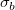
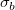
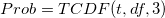

FAQ-968 Wie bestimme ich, ob die Steigung in einer linearen Anpassung sich signifikant von einem spezifischen Wert unterscheidet?
Linear-Fit-Slop-diff-from-Value
Letztes Update: 14.08.2018
Die lineare Anpassung ermittelt, ob die angepasse Steigung sich standardmäßig signifikant von 0 unterscheidet. Sie möchten jedoch die angepasste Steigung auch mit einem spezifischen Wert, der nicht 0 ist, vergleichen, den theoretischen Steigungswert zum Beispiel. Dies können Sie manuell folgendermaßen berechnen:
- Berechnen Sie das t-Verhältnis:

wobei b der angepasste Steigungswert ist.  kann jeder Wert sein, den Sie mit der angepassten Steigung vergleichen möchten, und  ist der Standardfehler der angepassten Steigung, die der Tabelle Parameter des Berichtsblatts der linearen Anpassung zu entnehmen ist.
kann jeder Wert sein, den Sie mit der angepassten Steigung vergleichen möchten, und  ist der Standardfehler der angepassten Steigung, die der Tabelle Parameter des Berichtsblatts der linearen Anpassung zu entnehmen ist.
- Verwenden Sie die Funktion TCDF, um die beidseitige Wahrscheinlichkeit zu berechnen, die dem folgenden Wert des t-Verhältnisses entspricht:

, wobei die Freiheitsgrade df = die Gesamtanzahl der Punkte - 2. 3 bedeutet, dass die beidseitige Wahrscheinlichkeit ausgegeben wurde.
Sie können die obenstehende Berechnung im Skriptfenster (Fenster: Skriptfenster) ausführen.
Wenn die ausgegebene Wahrsch. < 0,05, heißt das, dass die angepasste Steigung sich signifikant von dem spezifischen Wert unterscheidet.
Origin-Version mind. erforderlich: Origin 2019
Schlüsselwörter:Lineare Kurvenanpassung, lineare Regression, Steigung, signifikanter Unterschied, Vergleich, p-Wert